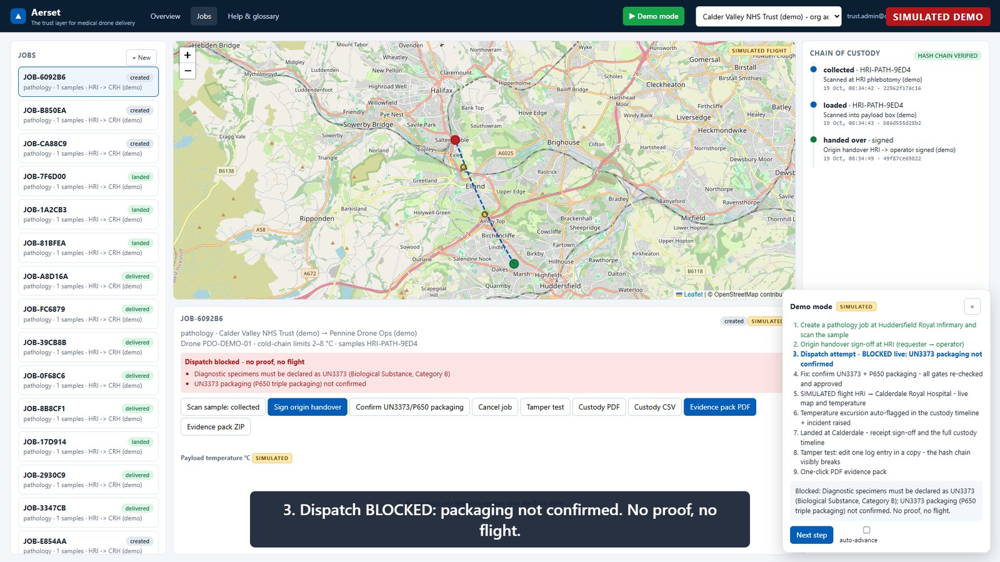
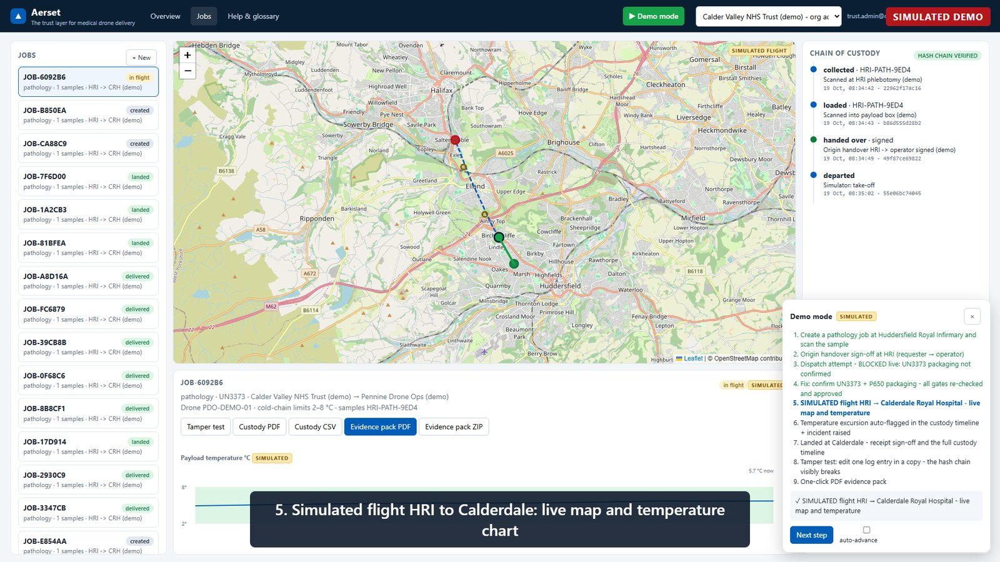
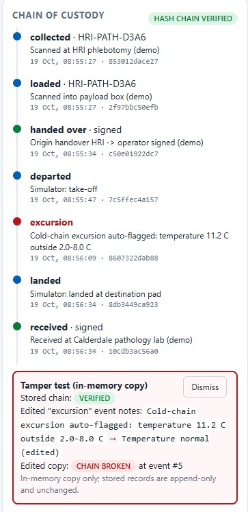
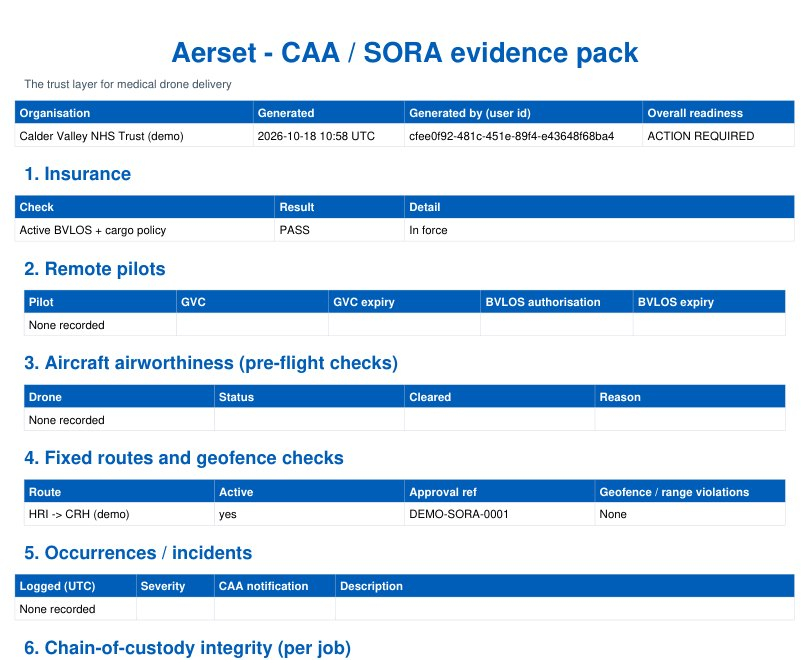

NHS trusts and pathology labs
A single audit trail for samples moved by drone, designed to sit alongside your existing sample tracking and lab systems rather than replace them.
Aerset is software for medical drone delivery. It logs who held each sample, what temperature it was kept at, and why each flight was allowed to leave.

Simulated demo data. Dispatch is refused because the specimen hasn't been declared as UN3373 in P650 triple packaging.
We want an NHS lab manager, an auditor or the CAA to be able to open one record and see, for any sample flown by drone, who held it, the temperature it was kept at and every check the flight passed.
We're starting with pathology samples moving between hospital sites in West Yorkshire, then plan to move on to chemotherapy and blood. We're building the software layer only, and we're doing it in the open with the teams who would use it.
Labs record a sample at collection and again on arrival. When a drone flies the leg in between, the evidence ends up split across flight logs, spreadsheets and paper.
That slows down audits, incident reviews and procurement. Before medical drone delivery can scale, every leg needs a clear answer to two questions: who held this sample, and did this flight pass its checks?
Before a job is released to the operator, Aerset checks it against the rules for that route. If anything fails, the flight is held and the reason is written into the record.
UN3373 in P650 packaging
Every scan and signed handover is added to an append-only log. Each entry stores a SHA-256 hash of itself and of the entry before it, so editing any past entry breaks the chain and the change is easy to spot.
Temperature and shock are logged throughout the flight. A cold-chain excursion is flagged automatically and appears in the same timeline as the handovers.

One click turns the record into a chain-of-custody certificate for each job, or a CAA BVLOS / SORA evidence pack covering insurance, remote pilots, airworthiness, routes, incidents and custody checks for every job.
The pack supports an operator's SORA or Operational Authorisation submission. It is not a submission itself.

A simulated pathology run from Huddersfield Royal Infirmary to Calderdale Royal Hospital: the dispatch is blocked, fixed and approved, then the flight is tracked with temperature, an excursion is flagged, the sample is received and an evidence pack is generated. Everything you see is simulated data.
Simulated demo. No real flights, patients or customers.
The documented REST API, the automated test suite (119 tests, 85% coverage) and the hash-chained custody log, on simulated data.
The front end for retail customers: placing a delivery and following it on the map. An early prototype on simulated data.
A single audit trail for samples moved by drone, designed to sit alongside your existing sample tracking and lab systems rather than replace them.
A way to show NHS buyers and the CAA that every flight met its checks and every handover was recorded. Works with any airframe.
The same dispatch and proof-of-delivery record with simpler setup for shops sending parcels. No specimen rules or cold chain needed.
Aerset is in development and the demo runs on simulated data. We're looking for a small number of NHS pathology teams and operators to help shape it.
We'd like to hear how you handle custody and flight evidence today. It takes two minutes, and there's no sales sequence afterwards.